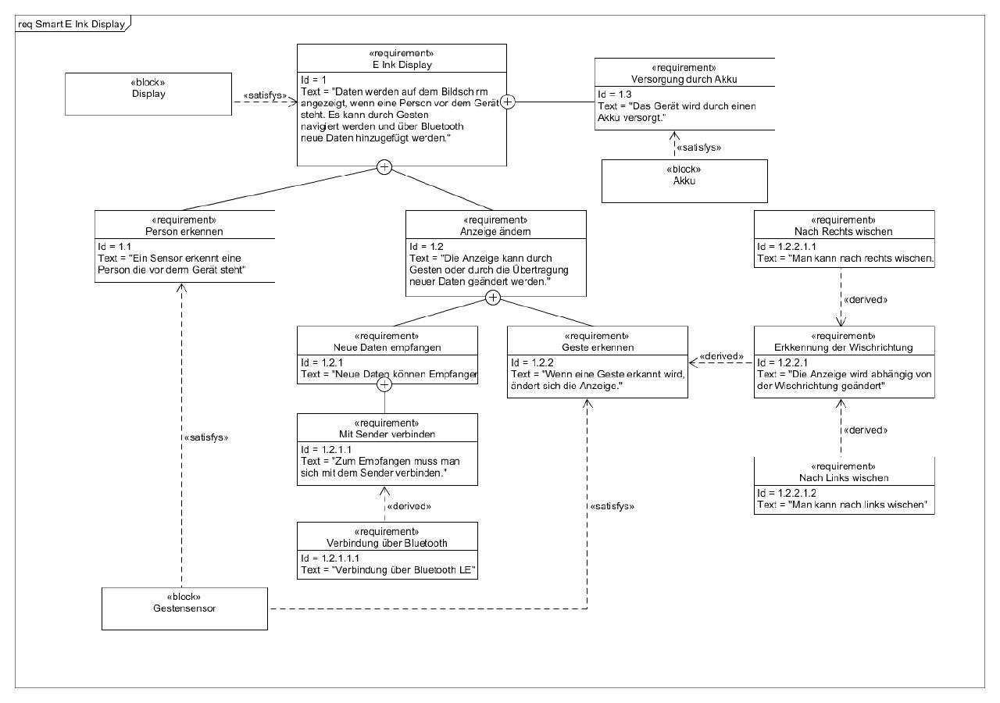

The device is capable of receiving images via bluetooth low-energy and store up to three images on the device. With a gesture sensor you can navigate through the stored images.
The images can be send and created with a specific android app. In the app you can change the background and text color, add text or draw by hand on the canvas.
For BLE your smartphone needs at least Android 6.0. Other Versions will get errors.
Before you install the App make sure you have enabled third-party apps on your smartphone. Then download the APK and transfer it to your device and install it. After it's installed the app is ready to work.
paste user manual link here
